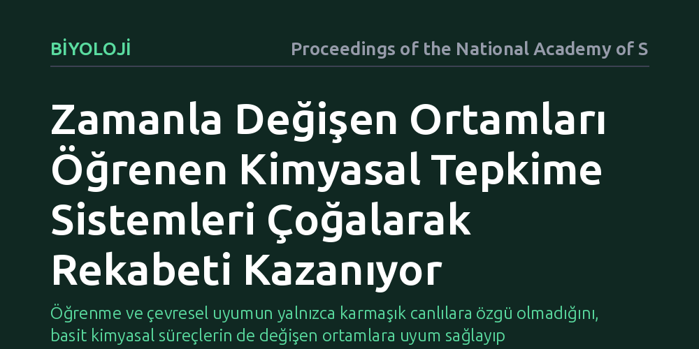

BIYOLOJI · Proceedings of the National Academy of Sciences · 2026-09-08
Araştırmacılar, basit kimyasal sistemlerin zamanla değişen çevreye nasıl uyum sağlayıp çoğaldığını inceledi. Geliştirilen tepkime-difüzyon modelinde, çevresel dalgalanmaları öğrenen kimyasal ağların kaynakları daha iyi kullanarak çoğalma yarışında rakiplerini geride bıraktığı saptandı.
Öğrenme ve çevresel uyumun yalnızca karmaşık canlılara özgü olmadığını, basit kimyasal süreçlerin de değişen ortamlara uyum sağlayıp evrilebileceğini gösterir.

Bir bakteriden insana kadar yaşayan her varlığın ortak bir özelliği vardır: Çevresindeki değişimleri sezer, bunlara uyum sağlar ve kendini kopyalayarak çoğalır. Biyolojide bu iki temel yetenek—yani öğrenme ile üreme—birbirinden ayrı düşünülemez. Ancak modern canlılardaki bu kusursuz uyum, DNA, RNA ve karmaşık protein makineleri ortaya çıkmadan önce nasıl başladı? Canlılığın kökenine kafa yoran bilim insanları uzun süredir en temel kimyasal süreçlerin bu iki davranışı nasıl birlikte kazanmış olabileceğini anlamaya çalışıyor.
Ortadaki temel soru son derece yalındır: Beyni, sinir sistemi hatta hücresel zarı bile olmayan basit kimyasal karışımlar, zaman içinde değişen bir ortamı öğrenip bu sayede hayatta kalma ve çoğalma yarışında öne geçebilir mi? Eğer bu mümkünse, canlılığa giden evrimsel yolculuğun düşündüğümüzden çok daha basit fiziksel ve kimyasal ilkelerle tetiklendiğini kabul etmemiz gerekir.
Araştırmacılar bu sorunun yanıtını aramak için laboratuvarda canlı hücreler yetiştirmek yerine, kuramsal fiziğin ve kimyanın temel taşlarından olan tepkime-difüzyon sistemlerine yöneldi. Tepkime-difüzyon süreçleri, kimyasal bileşenlerin bir yandan birbiriyle etkileşime girdiği, diğer yandan ortamda yayıldığı dinamik ağlardır. Yaşamın kendisi termodinamik dengeden uzak durmayı gerektirdiğinden, ekip dışarıdan sürekli enerji ve madde akışının sağlandığı minimal bir denge dışı kimyasal model kurguladı.
Geliştirilen modelde kimyasal sistemler, zamanla ritmik ya da düzensiz biçimde değişen dış çevresel koşullara maruz bırakıldı. Bilgisayar simülasyonları aracılığıyla, farklı kimyasal ağların bu dalgalanan ortamlara nasıl tepki verdiği, iç dinamiklerini çevrenin zamanlamasına uydurup uyduramadığı ve sınırlı kaynaklar altında birbirleriyle girdikleri çoğalma yarışının sonuçları adım adım incelendi.
Simülasyon sonuçları, kimyasal sistemlerin çevreyle olan etkileşiminde çarpıcı bir ilişkiyi ortaya koydu. Ortamdaki periyodik ya da zamana bağlı değişimleri kendi kimyasal tepkime hızlarına ve difüzyon modellerine yansıtmayı başaran ağlar, kaynakların bollaştığı anları adeta önceden tahmin ediyormuş gibi yakaladı. Başka bir deyişle, çevresel dalgalanmaları içsel durumlarında kodlayan kimyasal yapılar, çevreye uyumsuz kalan diğer sistemlere kıyasla belirgin bir büyüme avantajı elde etti.
Bu dinamik uyum, kimyasal ağların rakiplerini doğrudan yok etmesiyle değil, kaynak tüketimini çevrenin zamanlamasına senkronize ederek daha hızlı çoğalmasıyla gerçekleşti. Ortamın ritmini öğrenen tepkime-difüzyon yapıları, sınırlı besin havuzunda hızla baskın hale gelerek rekabeti kazandı. Böylece en ilkel kimyasal düzeyde bile öğrenme benzeri bir bilgi işlemenin, çoğalma başarısını doğrudan artırdığı somut biçimde gösterildi.
Elde edilen bulgular, biyolojide genellikle genetik materyale ve hücresel mekanizmalara atfedilen adaptasyon yeteneğinin, aslında dengesiz kimyanın temel fiziksel kurallarından kendiliğinden türeyebileceğini gösteriyor. Canlılığın ortaya çıkışında öğrenme ve çoğalma iki ayrı aşama olarak değil, birbirini doğrudan besleyen tek bir fiziksel süreç olarak başlamış olabilir.
Bu yaklaşım sadece yaşamın kökenine dair anlayışımızı tazelemekle kalmıyor; aynı zamanda sentetik biyoloji, akıllı malzemeler ve yapay kimyasal sistemler için de yeni kapılar aralıyor. Kendi kendine öğrenen ve çevreye göre büyümesini ayarlayabilen yapay kimyasal ağların tasarlanması, gelecekte biyolojik olmayan sistemlerde de benzer uyarlanabilir davranışlar üretmenin mümkün olabileceğini gösteriyor. Ancak bu sonuçların henüz simülasyon düzeyinde olduğunu ve laboratuvar ortamında ıslak kimyayla sınanması gerektiğini unutmamak gerekiyor.